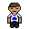

Exploração
Investigue os ambientes e descubra o que existe nos corredores da escola.
Quando os corredores ficam vazios, a escola revela um lado que ninguém deveria conhecer. Um projeto de jogo 2D de terror desenvolvido na Unity.
Conhecer o projeto Ver imagens
O Último Sinal é um projeto de jogo 2D com temática de terror, desenvolvido por estudantes da ETE Professor Paulo Freire.
A proposta é criar uma experiência sombria ambientada no espaço escolar, combinando exploração, iluminação e desafios.
Este site acompanha o progresso do projeto e reúne informações sobre sua criação.

Os pilares que orientam a construção da experiência.
Investigue os ambientes e descubra o que existe nos corredores da escola.
Iluminação e arte visual ajudam a construir a identidade de terror.
Personagens em pixel art e mecânicas próprias criadas na Unity.
Confira os personagens, cenários e registros do desenvolvimento. Clique em uma imagem para ampliá-la.
O personagem principal já está incluído.
As demais imagens aparecem quando os arquivos correspondentes são enviados para a pasta
assets.
O projeto evolui gradualmente, com implementação, testes e melhorias em cada etapa.
Definição da proposta e dos elementos principais.
Criação do personagem e implementação dos controles.
Desenvolvimento do mapa e da ambientação.
Implementação dos sistemas de jogo e aprimoramentos.
Somos uma equipe iniciante no desenvolvimento de jogos, comprometida com o aprendizado, a colaboração e a evolução contínua. Estamos enfrentando novos desafios, aprimorando nossas habilidades e dando o nosso melhor para transformar esta ideia em um projeto funcional.
Este projeto representa nossa dedicação ao aprendizado, à criatividade e ao trabalho em equipe. Mesmo no início de nossa trajetória, buscamos superar dificuldades, compartilhar conhecimentos e desenvolver uma experiência de terror 2D da qual possamos nos orgulhar.
Projeto: O Último Sinal
Instituição: ETE Professor Paulo Freire
Professor orientador: Vinicius Marques
Estudantes:
Ano letivo: 2026
Área: Desenvolvimento de jogos 2D
Engine utilizada: Unity